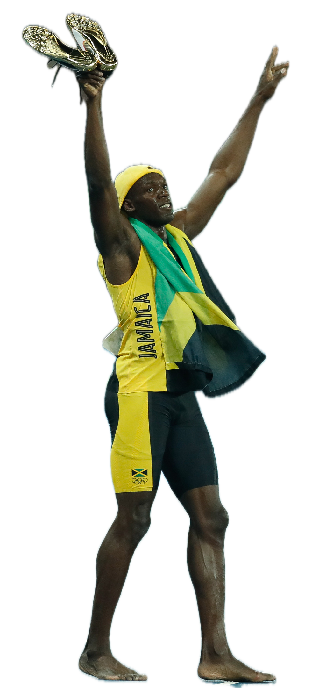

ATHLETICS / USAIN BOLT
把时间留在身后
尤塞恩·博尔特 / 牙买加

男子100米 / 个人最佳
9.58
秒
2009-08-16 · 柏林
风速 +0.9 m/s
男子200米 / 个人最佳
19.19
秒
2009-08-20 · 柏林
风速 −0.3 m/s
里约奥运庆祝瞬间
真实照片 · 原生分割
真实照片 · 原生分割
成绩资料 / World Athletics
三届奥运会 · 男子100米决赛
单位：秒 · 用时越短越快；零基线条长表示用时。
摄影 Fernando Frazão/Agência Brasil · CC BY 3.0 BR · 已去背景